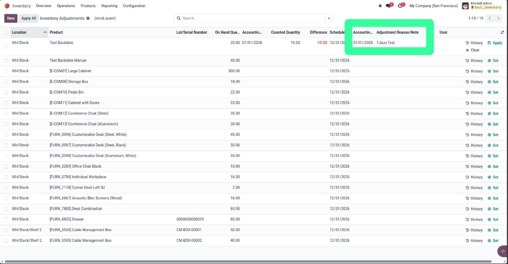
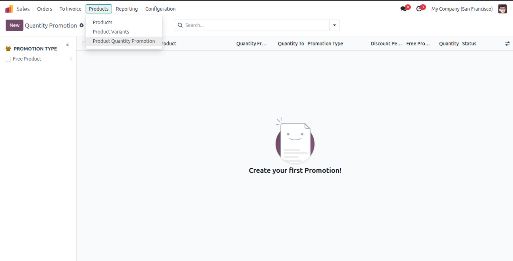
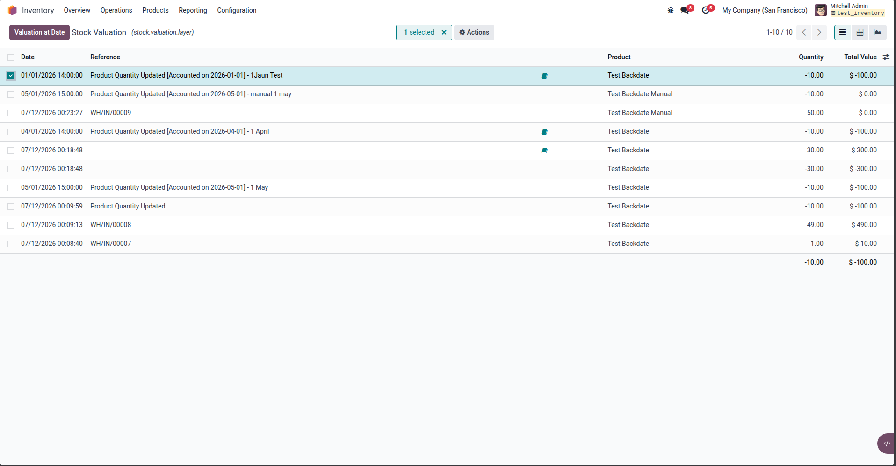
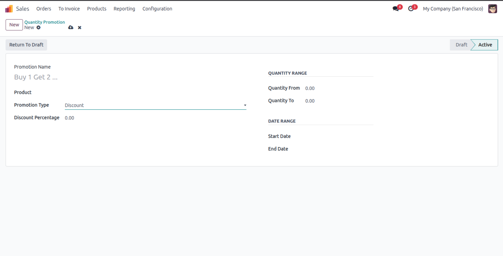

Backdated Inventory Adjustment
Apply your inventory counts at the date they really happened. The stock moves, the move lines and the journal entry are all recorded at your chosen accounting date — so Product Moves and Inventory Valuation reports finally tell the true story.
Key Highlights
One Date, Recorded Everywhere
Set the Accounting Date on the counted line: stock moves, move lines and the journal entry are all dated historically.
True Historical Reports
Product Moves and Inventory Valuation — including the “at date” historical view — show the adjustment at the backdate: in Odoo 19 the valuation is computed straight from the move dates.
Automated & Manual Valuation
Automated products get their journal entry posted at the backdate. Manual products are handled gracefully — no entry, no errors.
Safe by Design
Future dates are blocked, fiscal lock dates are fully respected, multi-company timezones are handled, and with the date left empty the behavior is 100% standard Odoo.
How It Works
Count Your Stock
Open Inventory ▸ Physical Inventory and enter the counted quantity as usual.
Set Date & Reason
Fill the Accounting Date (the real count date) and an optional Adjustment Reason/Note on the line.
Apply — Any Way You Like
Row-level Apply, the multi-select wizard or Apply All — every path records the adjustment at your date.
What Gets Backdated
Screenshots

Accounting Date & Adjustment Note on the counting lines
Two optional columns in Physical Inventory — fill them only when you need a backdated adjustment.

Product Moves at the real count date
The inventory move and its lines carry the backdate, with the reason appended to the reference.

Inventory Valuation shows the adjustment at the backdate
Including the historical “at date” view — the adjustment is part of the past value.

Journal entry posted at the accounting date
For products with Automated inventory valuation — created and dated by the standard Odoo flow.
Need Help or a Customization?
Our team replies fast — implementation, support and custom development.
© SoftPrimes — Backdated Inventory Adjustment for Odoo 19 · OPL-1